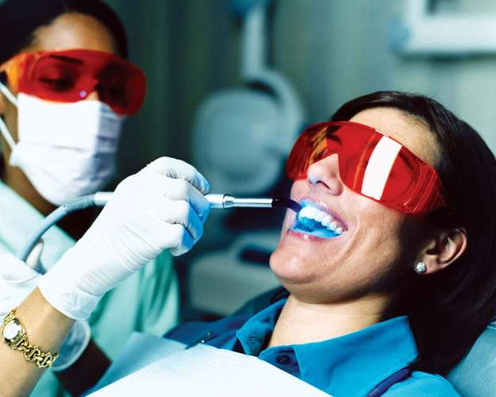

In most countries that recognize specialties in dentistry, the specialist is limited to practice in the specialty and cannot carry out the practice of general dentistry. Where the specialty is thus limited, the general dentist may refer patients, and a specialist’s practice is mainly on a referral basis. In Britain and in certain provinces in Canada, specialists may conduct a general practice. In the United States nine specialties are recognized by the American Dental Association: orthodontics and dentofacial orthopedics; pediatric dentistry; periodontics; prosthodontics; oral and maxillofacial surgery; oral and maxillofacial pathology; endodontics; public health dentistry; and oral and maxillofacial radiology.
Orthodontics takes as its aims the prevention and correction of malocclusion of the teeth and associated dentofacial incongruities. Orthodontics has been practiced since ancient times, but methods of treatment involving the use of bands and removable appliances have been prominent only since the beginning of the 20th century. The United States gave impetus to the development of orthodontics, which was recognized as a specialty with the formation of the American Society of Orthodontists in 1900.
The demand for this service extends from the child to the mature adult, although human bone responds to tooth movement best in a person under 18, and it is generally agreed that children benefit more from treatment than do adults. In general, oral health and physical appearance are the two most important reasons for undertaking a course of orthodontic care.
Pediatric dentistry, analogous to pediatrics in medicine, is concerned with the dental care of children and adolescents.
Routine care of the teeth in children is important in the prevention of tooth decay, especially as permanent teeth emerge to replace primary teeth and as bone and other structures surrounding the teeth mature. Routine care of the teeth in children is important in the prevention of tooth decay, especially as permanent teeth emerge to replace primary teeth and as bone and other structures surrounding the teeth mature. Much of the routine of practice is centred on the control of caries (tooth decay) and involves the use of fluoride and dietary and hygienic instruction. The need to influence tooth positions presents the next most frequently encountered problem. The correction of incipient abnormalities in tooth alignment may obviate the necessity for lengthy treatment. Many pediatric dentists use growth-influencing techniques to correct jaw alignments. Patience and a working knowledge of children’s behaviour patterns and childhood physical and mental diseases and disease ramifications are important qualifications of the pedodontist.
Periodontics is concerned with the prevention, diagnosis, and treatment of diseases of the periodontal tissues—the tissues that surround and support the teeth. These tissues consist mainly of the gums and the jaws and their related contiguous structures.
The most prevalent periodontal disease is periodontitis, commonly called pyorrhea, an inflammatory condition usually produced by local irritants. Periodontitis, if untreated, destroys the periodontal tissues and is a major cause of the loss of teeth in adults.
The advances of periodontics have been mostly in techniques of treatment. It is believed that bacterial plaque, a soft layer of substances rich in bacteria that adheres to the teeth, is the factor responsible for most destruction of the gums and the tissues surrounding the teeth. Periodontists advocate removal of such plaque by a specific regimen of controlled hygiene.
Prosthodontics is concerned with the restoration and maintenance of oral function, comfort, appearance, and health by the replacement of missing teeth and contiguous tissues with artificial substitutes, or prostheses.
Prosthodontists have special training in the construction and placement of fixed (stationary) and removable appliances for the replacement of missing teeth. They also construct obturators, prosthetic devices designed to close off defects in the roof of the mouth in cases of cleft palate. A subspecialty of prosthodontics is maxillofacial prosthetics, which involves with the creation of appliances, composed of latex, silicone, or other modern materials, designed to replace portions of the face and jaws that have been lost because of surgery, disease, congenital disorders, or accident.
The proper fitting of oral prostheses requires a detailed knowledge of the anatomy of the head and neck, of the physiology of the neuromuscular system, and of the science of occlusion and jaw movements. It also requires skill in planning, mouth preparation, impression making, registration of jaw relations, try-in procedures, placement of the prostheses, and follow-up care.
Oral surgery deals with the diagnosis of, and the surgery required by, diseases, injuries, and defects of the human jaws and associated structures. Both dentists and physicians refer a wide variety of special dental problems to the oral surgeon. These may include the removal of impacted and infected teeth and the treatment of cysts, tumours, lesions, and infections of the mouth and jaws. In addition, there are more complex problems, such as jaw and facial injuries, cleft palate, and cleft lip.
Oral pathology is the study of the causes, processes, and effects of oral disease, together with the resultant alterations of oral structure and functions. The oral pathologist provides diagnoses on which treatment by other specialists will depend.
Endodontics deals with the treatment of diseases of the inside of the tooth, including the pulp chamber, the pulp canal, and contiguous structures. Root canal therapy and bleaching of nonvital teeth are standard treatments rendered by endodontists.
Public health dentistry is recognized as a specialty in Canada and the United States. The American Dental Association recognizes dental public health as a specialty if the holder of the master’s degree proceeds to a further year of study in training and passes the examination of the American Board of Dental Public Health. Training in dental public health is also available in the United Kingdom. The specialty is not emphasized to the same degree in the rest of the world.
Oral and maxillofacial radiology deals with the use of X-rays for diagnosis and treatment of diseases or disorders of the mouth and jaw. It embraces not only the standard X-ray but also the panographic X-ray, as well as the use of radiation and radioactive materials in treatment of disease of the mouth and jaws.
The face is the most recognizable feature of a person. The mouth, which includes the lips, cheeks, jaws, teeth, and gums, makes up the lower third of the face. Cosmetic (or aesthetic) dentistry may offer profound benefits to the quality of life for those people who need it.
Cosmetic dentistry may be classified as skeletal or dental. Skeletal changes may be achieved through oral surgery, which can change the position of the jaws. Dental changes may be achieved by either adding to, taking away from, or moving the teeth. The most common materials to add to teeth to change their appearance are bonding, a tooth-coloured plastic, or porcelain, a type of ceramic. Taking away tooth structure is accomplished with a drill. If only a slight amount of the tooth is removed, it is called sculpting or reshaping, and nothing is subsequently added. If a more substantial amount of tooth is removed, then porcelain may be added in a new position. Moving teeth is accomplished with braces, which can be either fixed or removable.
Reconstructive dentistry involves any major rebuilding of the mouth, typically with porcelain and metal. Reconstructive dentistry may be needed by individuals who have many severe cavities, have generalized severe gum disease, or have been in an accident. Reconstructive dentistry frequently involves a combination of all the dental specialties; patients may need multiple crowns (caps), gum therapy, root canal therapy, braces, or oral surgery, including dental implants.
Reconstructions are planned to first stop the continuation of active disease and then repair the damage. Emotional components of treatment, such as fear, are frequently involved, and a dentist must be caring and have an understanding of psychology. Major potential sources of postoperative pain are often eliminated early in treatment by performing root canal therapy when indicated. The fabrication of final porcelain bridges usually begins 6 to 12 weeks following the completion of any necessary surgery. It is critical for patients to understand that reconstructed teeth require frequent cleanings and maintenance.
A dental implant is an artificial tooth root. It serves to attach artificial teeth to the underlying jawbone. Dental implants may be visualized as screws, and the jawbone may be considered a piece of wood. Under this analogy, a screw would be turned half its length into a piece of wood, and an artificial tooth would be glued to the part of the screw projecting above the wood. The tooth would be firmly attached to the screw, which in turn would be firmly anchored in the wood. A single dental implant may be used for one missing tooth. Four to eight dental implants may be placed in a jaw that is missing all the teeth.
Dental implants need to be placed in an adequate amount of bone that is free of infection. Sometimes surgical procedures are first necessary either to clean out existing infection or to create more bone for implantation procedures, such as bone ridge augmentation or nasal sinus elevation. The surgery to place the dental implants themselves is similar to that of tooth removal.
Dental implant reconstructions can take 6 to 12 months to complete, mostly because of the healing time necessary between surgeries. Because bone is living tissue, it needs time to respond favourably to the biocompatible titanium implants. The biophysics of the early cellular response of the hard (bone) and soft (skin and ligament) tissues to dental implantation is an area of intense research and debate. The benefits of this research carry over to orthopedics—for example, with the replacement of spinal rods and the healing of difficult broken bones, both of which require screws for immediate immobilization.